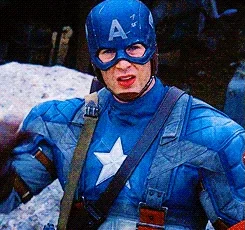

Was a frail young man who underwent the Super Soldier Serum treatment during World War II, transforming him into the pinnacle of human physical perfection. His enhanced strength, speed, agility, and reflexes make him a formidable fighter. He is also known for his indestructible vibranium shield, which he uses for both offense and defense. Known for his strong moral compass, Captain America embodies courage, leadership, and sacrifice, making him a natural leader of the Avengers.
